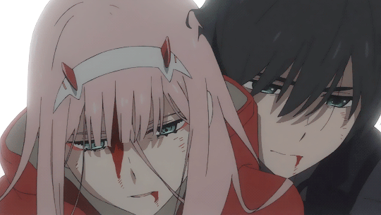
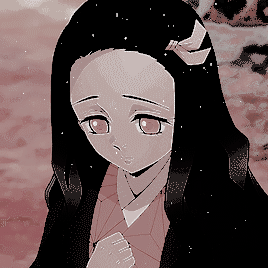
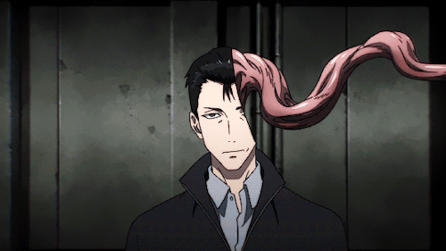
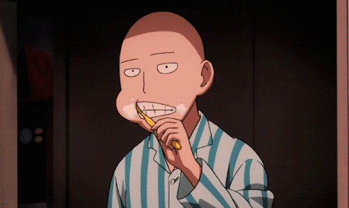

Darling in the Franxx

En un futuro distante, la humanidad ha creado ciudades fortificadas llamadas Plantaciones, que funcionan como refugio para las personas, pues el suelo de la Tierra está arruinado.Dentro de estas ciudades futuristas, niños y niñas son entrenados para pilotar robots gigantes llamados Franxx, sin saber nada del mundo exterior.
Demon Slayer

En la Era Taisho, Tanjiro Kamado es un chico inteligente y con buen olfato cuya misión consiste en proteger a su hermana demonio para que los cazadores de demonios no la maten.
Además, también busca al líder de los demonios, que fue el responsable de la muerte de su familia. En el camino, va conociendo otras personas mientras prosigue la búsqueda de una cura para su hermana.
Además, también busca al líder de los demonios, que fue el responsable de la muerte de su familia. En el camino, va conociendo otras personas mientras prosigue la búsqueda de una cura para su hermana.
Parasite

Un adolescente de 17 años llamado Shinichi Izumi, que vive con sus padres en un barrio tranquilo en Tokio.
Una noche, criaturas similares a gusanos llamados “parásitos” aparecen en la Tierra, haciéndo huésped a los humanos al invadir sus cerebros entrando a través de los oídos, la nariz, etc.
One Punch-Man

En la Era Taisho, Tanjiro Kamado es un chico inteligente y con buen olfato cuya misión consiste en proteger a su hermana demonio para que los cazadores de demonios no la maten.
Además, también busca al líder de los demonios, que fue el responsable de la muerte de su familia. En el camino, va conociendo otras personas mientras prosigue la búsqueda de una cura para su hermana.
Además, también busca al líder de los demonios, que fue el responsable de la muerte de su familia. En el camino, va conociendo otras personas mientras prosigue la búsqueda de una cura para su hermana.